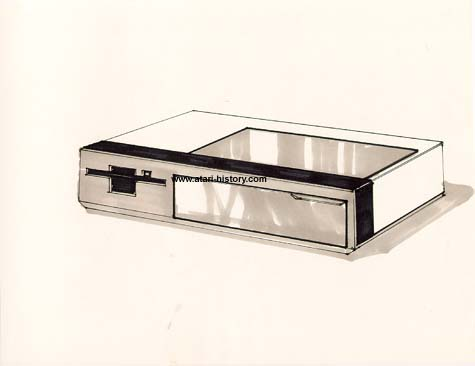

Atari Laptop Concept
with dock.
Again, based on the Alan Kay "Databook" concept and also looking nearly identical to what Radio would release several years later as the Model 100 computer, this Atari Laptop concept is striking in form and functionality and would have been applaudingly accepted by the computer community had it been released in 1984 sometime.
A more interesting aspect to this laptop concept is its concept of being able to come home or to the office and then "Docking" the laptop to an expansion box with built in disk drive and printer. Today many laptops are touted as having available such options, but to suggest such an idea back in 1983 is groundbreaking in thought and design.
